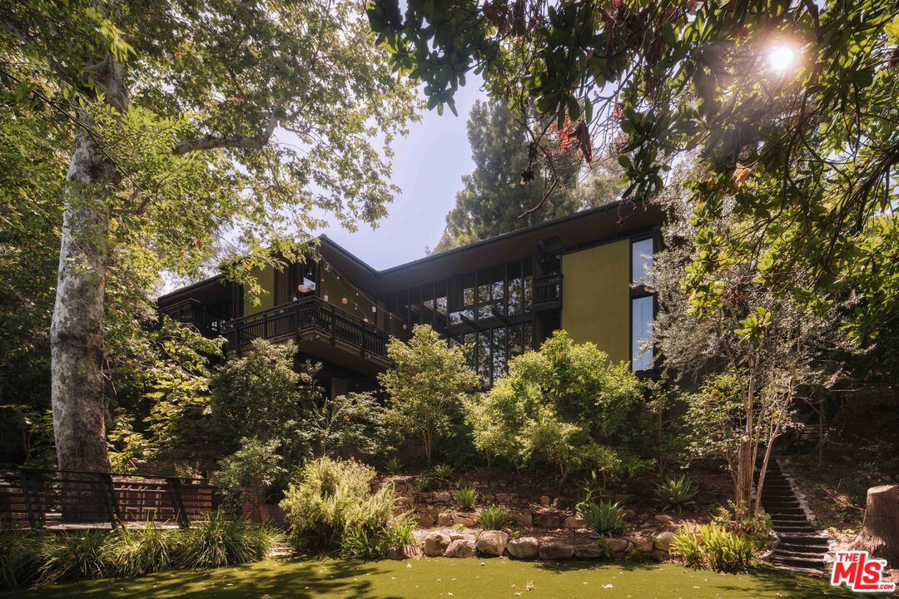
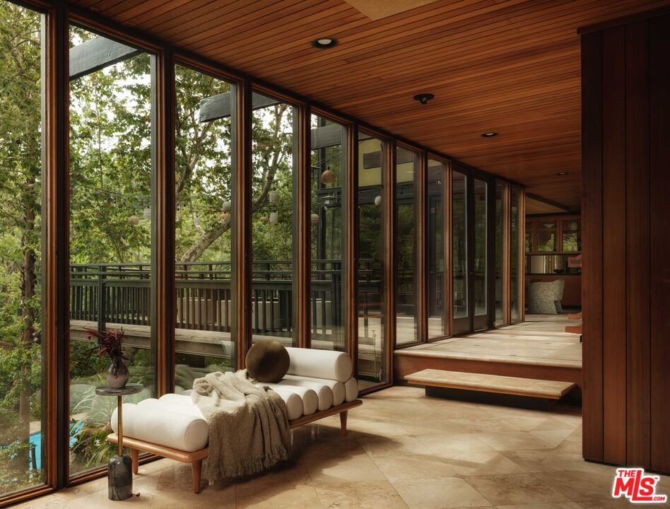
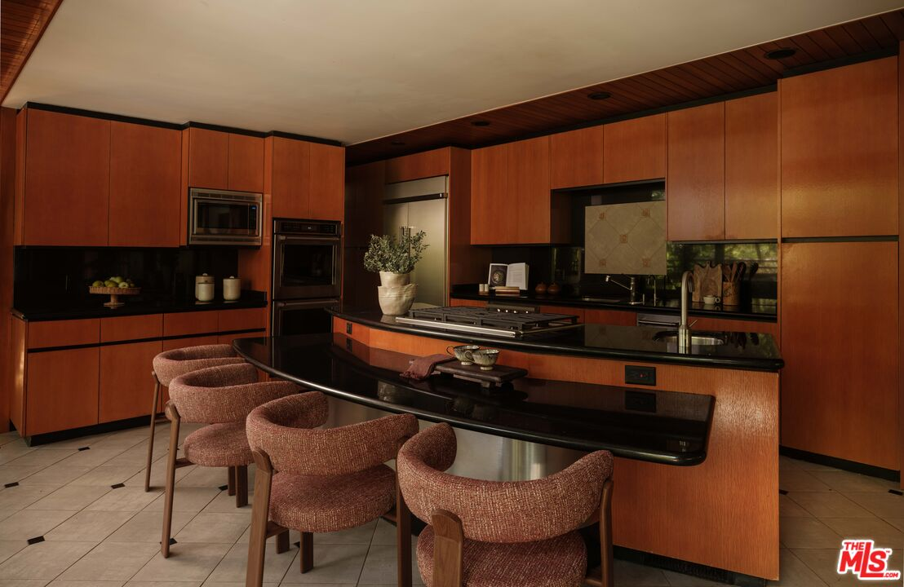
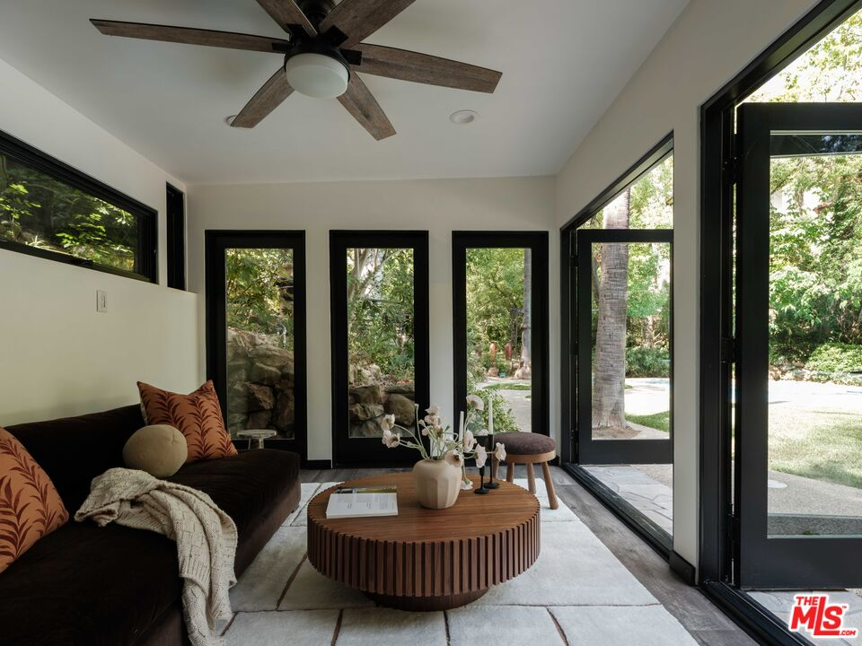

Obsession No. 018San Rafael · Pasadena
954 Hillside Ter
The guest quarters are basically their own little house, with a living room, dining area, full kitchen, and bedroom.
Why it made the edit
“There are guest rooms, and then there is basically a second house.”
I kept coming back to the guest quarters. They have their own living room, dining area, full kitchen, and bedroom, so calling this a guest room does not really cover it.
That is such a specific kind of luxury to me. The people you love can stay close, for a weekend or for much longer, and everyone still gets to have their own life.
The main house was designed in 1965 by Ainsworth, Angel & McClellan, with landscape architecture by Kenneth S. Nakaba. It is warm redwood, smooth plaster, custom millwork, travertine, and long walls of glass, with the Japanese influence showing up everywhere without the house feeling themed.
The lot is nearly half an acre, with mature trees, winding paths, a pool, a spa, and several places to sit outside. There is also a skylight over the primary suite and a kitchen I am very glad nobody tried to turn into the same white kitchen we have all seen a hundred times.
Four bedrooms, six baths, and 5,559 square feet in Pasadena’s San Rafael neighborhood, listed at $4,995,000. But really, it was that second little house that got me.



Want to see it in person?
Curious about this one?
Let’s talk.
Listed by Bryony Atkinson, MAISONRE & Weston Littlefield, Christie’s International Real Estate SoCal. House of Zonshine does not represent this listing. Property details are from listing information and public sources and should be independently verified.